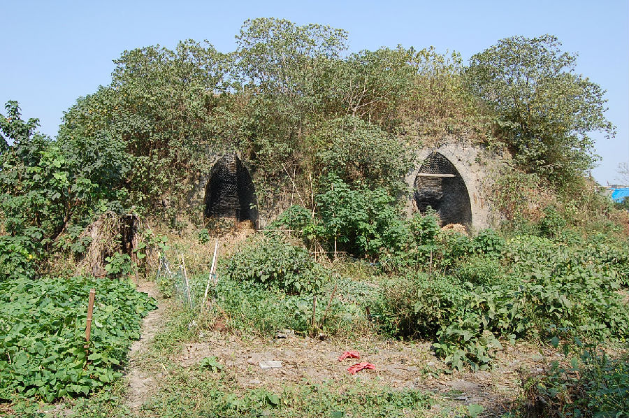

嘉兴市文物保护网 · 市级文物保护点 · 2020-11-06 · 原文

富园村窑址位于嘉兴市秀洲区新塍镇富园村25组，据建筑形制和村民介绍，综合判断建于20世纪70年代，曾烧制小青砖和瓦，于20世纪90年代废弃至今。窑址占地面积458平方米，东西长32.167米，南北宽14.23米，顶高7.94米，东西内径1.86米。东西并连分布有2个窑墩，尺寸大致相同，外形呈半圆形土墩，墙体由小方砖堆砌而成。窑口均朝南，窑墩内部为穹窿形，顶部中央开设有一方形通风口，墩下部亦设有若干个通风口。现存此类窑址已较少，该窑墩保存较完整，具有一定的研究价值。2009年公布为嘉兴市文物保护点。